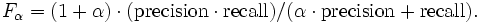

The "Anatomy" track of the 2007 campaign consists of finding alignments (3 specific tasks) between the Adult Mouse Anatomy and the NCI Thesaurus (describing the human anatomy). These two ontologies are available in owl here:
Use these ontologies as input for your matching system.
Some questions and answers on certain problems with the matching task are listed in a FAQ-page. This page eventually contains some useful hints.
We would like to gratefully thank Martin Ringwald and Terry Hayamizu (Mouse Genome Informatics - http://www.informatics.jax.org/), who provided us with a reference mapping for these ontologies. The reference mapping contains only equivalence correspondences between concepts of the ontologies. No correspondences between properties (roles) are specified. If your system also creates correspondences between properties or correspondences that describe subsumption relations, these results will not influence the evaluation (but can nevertheless be part of your submitted results).
The results of your matching system will be compared to this reference alignment. Therefore, all of the the results have to be delivered in the alignment format.
Note, that your system has to provide meaningful confidence estimations for each generated correspondence somewhere in the range from 0.0 (extremly unconfident) to 1.0 (very confident). Beyond the standard f-measure and precision resp. recall it is also planned to measure the quality of these confidence values.
In particular, the following matching results have to be provided:
The results of task #1, #2, and #3 will be checked against the reference mapping to compute recall and precision. For all three task we will compute the f-measure which is the (weighted) harmonic mean of precision and recall.

In task #1 recall and precision are evenly weighted (alpha = 1). For task #2 and #3 precision and recall are weighted differently. Alpha will be set to 5 respectively 1/5. Task #2 and #3 will show if your system is configurable for different scenarios.
The time schedule is available at http://oaei.ontologymatching.org/2007/ in the section "Schedule Overview".
Important: Notice that the ontologies of this track have been automatically transformed from their corresponding .obo-files. Early testing and communicating problems could be useful and is desired.You should submit your results in the format and directory structure described here. In more detail with respect to the anatomy testcase, your submission should contain the following folders and files.
+- anatomy | +- 1 | | +- participant.rdf | +- 2 | | +- participant.rdf | | +- participant-configuration.txt | +- 3 | | +- participant.rdf | | +- participant-configuration.txt
Besides the alignments described in the alignment format (the participant.rdf files), you should also specify which configuration has been chosen to generate the results for task #2 and #3. For task #1 the standard configuration of your system should be used. Thus, no additional information has to be provided. Since for task #2 and #3 precision resp. recall is more important, the chosen configurations should be different from the standard configuration of your system. Therefore, in the files participant-configuration.txt you have to describe shortly
If you cannot generate alignments for tasks #2 and #3 leave the corresponding folders empty.
If you have any problems working with the ontologies or any questions, feel free to write an email to christian [at] informatik.uni-mannheim.de.
Last updated: 27.08.2007 by Christian Meilicke.